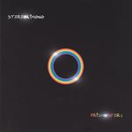

| Artist: | StereoKimono |
| Title: | Prismosfera |
| Label: | Immaginifica QQ 1001 CD |
| Length(s): | 54 minutes |
| Year(s) of release: | 2003 |
| Month of review: | [01/2004] |
| 1) | Onda Beta | 8.39 |
| 2) | Rosso Di Luna | 8.08 |
| 3) | Bahnhofstrasse | 5.40 |
| 4) | Xetrov 5 | 6.02 |
| 5) | L'Uomo Nuvola | 9.26 |
| 6) | Salmandra | 4.33 |
| 7) | La Soffitta Volante | 11.58 |
We continue with Rosso Di Luna, which opens with nicely flowing acoustic guitar playing. This is a more dreamy track with more obvious melodies and I have to admit liking it more than the opener. However, it is not terribly distinctive, and simply seems to pass by. Aha, some keyboards solo right in the middle here, which tend to help the music veer away from jazzrock and into more typically progressive areas. The drummer tend to work rather distinctively here, inserting some complicated runs at some point, not doing anyhthing at the other. This gives the impression sometimes that the music has stopped when it has not. The organ plays a more prominent, meandering role in the final few minutes.
What the band brought to naming the third track Bahnhofstrasse, is something I am not likely to find out from the music. The music has a certain tango feel with cello like sounds dominating. I wonder how they obtain the sound they do, here. The funkiness reenters the stage, playing a repetitive passage reminiscent of the early eighties KC, although a name like Gordian Knot also comes to mind easily. The melody on this final part is quite nice, it is the most distinctive one so far.
Xetrov 5 shows another face of the band, dark and brooding. The sharp guitar work again reminds me of Gordian Knot, quite a bit of hecticism in here. Percussion time then, after which the urgent guitar returns. This is good. The ending is atmospheric.
The opening of L'Uomo Nuvola is also promising, a bit epic. The drums are laidback and jazzy, but the synths dominate, while the bass bounces around quite merrily. Plenty of variation on this one, acoustic strumming passages, jazzrock, tension building guitar work. The combination of all this into one track is however somewhat questionable. We end with rodeo music. Great fun.
Salmandra starts with the alarums on. This is frantic playing. I repeat when I'm distressed. This is frantic playing. The song has a nicely rolling gait, and might be seen as a continuation of Xetrov 5. The guitar line is quite melodic though. The band does play around a bit in this one, and I am not sure whether that is a good idea. The bass playing is heavy and strong. One of the tracks most to my liking.
La Soffitta Volante is intelligent symphonic rock with some great melodic material and a good steady flow to it. This is excellent stuff. Time for introspection too on this one, but always the catchy melodic part will return. However, the band inserts one of its more frolic passages. Instead of country and western, we get a more Arabic sounding passage. A bit like Arabs running wild in fact. I guess the influence of Area is not far away here. The conclusion of this track is experimental: birds, samples and so on. Even some Demetrio Stratos (I am not sure whether in imitation or for real) here.